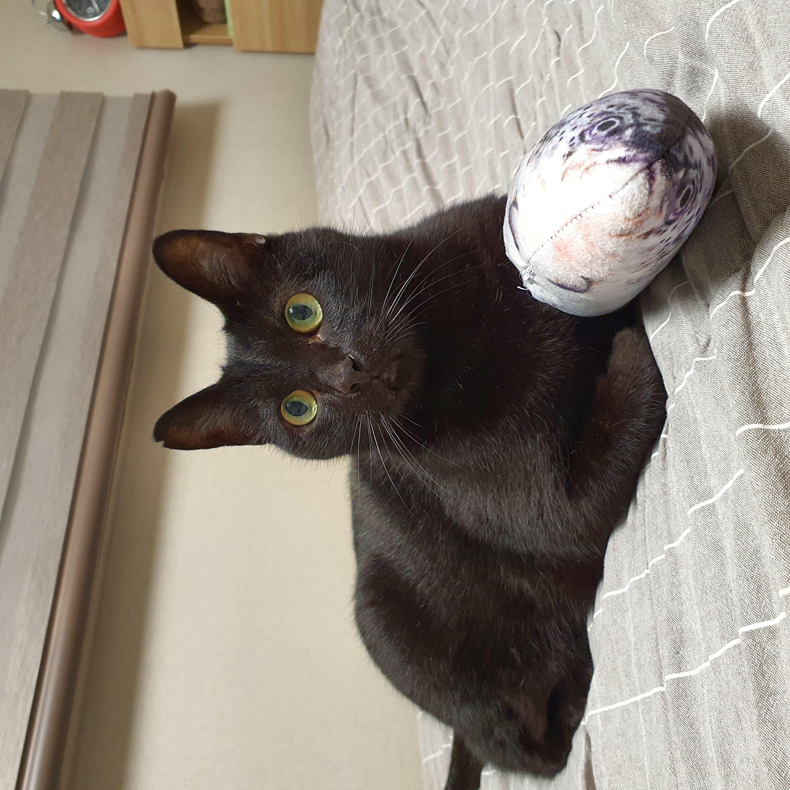

▷겨울철 적정 온도 및 습도◁

겨울철 최적의 실내 온도 : 20~24도
성묘의 경우 이 온도보다 조금 낮아도 괜찮으나, 노령묘나 어린 고양이의 경우 체온 조절이 상대적으로 어려우므로 적정 온도를 유지할 수 있도록 주의를 기울이는 것이 좋습니다.
겨울철 최적의 습도 : 50~60%
겨울은 건조한 계절이기 때문에 만약 습도가 35% 아래로 떨어지면 천식이나 비염의 증상이 있다면 습도가 부족할수록 증상이 악화될 위험이 있습니다. 그러므로 가습기나 빨래 등을 널어 주변 습도를 높여주는 것이 좋습니다.